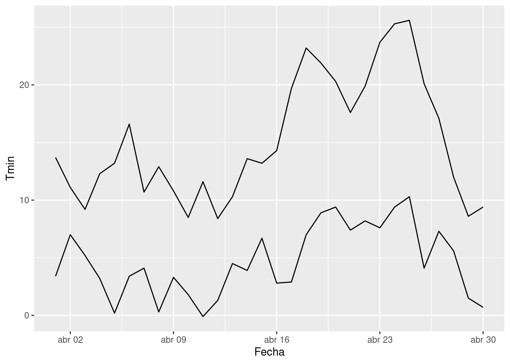
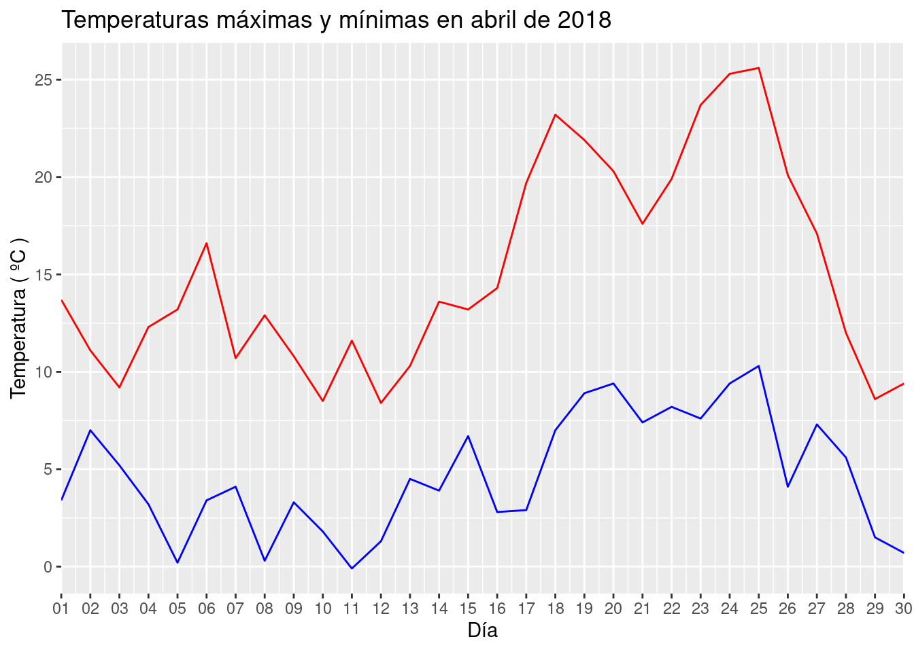

9.2 Importar datos
En este apartado veremos cómo importar datos desde un fichero externo con el paquete readr. El paquete readr forma parte de tidyverse de forma que no es necesario cargarlo individualmente si ya has cargado tidyverse. En concreto, veremos cómo importar los datos contenidos en un archivo CSV (comma separated values) con la función read_csv().
9.2.1 Los datos
Trabajaremos con un archivo de nombre temperaturas.csv, que contiene las temperaturas máximas y mínimas registradas en el observatorio de la Virgen del Camino para todos los días del mes de abril del año 2018.
Descárgalo pinchando aquí y guárdalo en una carpeta de nombre data en el directorio del archivo R Markdown con el que estés trabajando.
9.2.2 Importar desde archivo local
Teniendo el archivo descargado en nuestro equipo, podemos importarlo especificando, como primer argumento de la función read_csv(), la ruta del archivo, que puede ser local respecto al directorio de trabajo actual.
Con la siguiente instrucción leemos el archivo que hemos descargado y lo almacenamos en un objeto de nombre temps.
temps <- read_csv("data/temperaturas.csv")Si obtienes algún error indicando que no se encuentra el archivo, puede deberse a que el directorio de trabajo no es el correcto.
Puedes saber cuál es el directorio de trabajo actual con
getwd().Para establecer que el directorio de trabajo sea aquel que contiene a tu archivo R Markdown, selecciona la pestaña de tu archivo .Rmd y utiliza el menú:
Si todo ha ido bien, el objeto temps aparecerá en el panel Environment y podrás visualízarlo.
Verás que hay \(30\) filas, una por cada día del mes, y \(3\) columnas con las variables:
Fecha: fecha del día, en formato año-mes-díaTmax: temperatura máxima del díaTmin: temperatura mínima del día
9.2.3 Importar desde URL
Antes hemos realizado la descarga del archivo de datos de forma manual. También podríamos haberlo hecho desde R, con la función download.file():
download.file(
url = "https://raw.githubusercontent.com/EMazcunan/basics-r-rstudio/master/data/temperaturas.csv",
destfile = "data/temperaturas2.csv"
)Comprueba que se ha creado el archivo temperaturas2.csv en la carpeta data.
De hecho, el argumento para especificar el archivo en la función read_csv, admite una URL. Así que los dos pasos que hemos seguido antes, descargar e importar, pueden hacerse con una sola instrucción:
temps2 <- read_csv("https://raw.githubusercontent.com/EMazcunan/basics-r-rstudio/master/data/temperaturas.csv")Después de ejecutar la instrucción anterior, puedes verificar que los objetos temps y temps2 son idénticos.
9.2.4 Usar datos importados
Una vez que hemos importado los datos de un fichero y los hemos almacenado en un objeto, podemos utilizar dicho objeto como si se tratara de una de las hojas de datos predefinidas en R.
Podemos por ejemplo representar la evolución de las temperaturas mínimas y máximas a lo largo de los días:
ggplot(data = temps) +
geom_line(mapping = aes(x = Fecha, y = Tmin, group = 1)) +
geom_line(mapping = aes(x = Fecha, y = Tmax, group = 1)) 
La función geom_line() actúa primero como si se dibujara un gráfico de puntos con geom_point() y luego conecta los puntos conforme indique el valor del argumento group. En el caso de nuestros dos diagramas de líneas, queremos que todos los puntos estén conectados, y lo indicamos usando group=1. Cuando hay más variables, la agrupación para las líneas suele hacerse por variable. Si por ejemplo tuvierámos cada día mediciones en varias ciudades, podríamos agrupar para la variable especificando la ciudad.
Cuando varias capas de un gráfico comparten estéticas, esas estéticas comunes pueden especificarse en el argumento de ggplot(). El ejemplo anterior puede acortarse a:
ggplot(data = temps, mapping = aes(x = Fecha, group = 1)) +
geom_line(mapping = aes(y = Tmin)) +
geom_line(mapping = aes(y = Tmax)) A continuación tenemos una versión un poco más elaborada del gráfico anterior. Utiliza el paquete scales, que ha de instalarse con install.packages("scales").
library(scales)
ggplot(data = temps, aes(x = Fecha, group = 1)) +
geom_line(aes(y = Tmax), color="red") +
geom_line(aes(y = Tmin), color="blue") +
scale_x_date(
expand = c(0, 0),
breaks = date_breaks("1 day"),
labels = date_format("%d")
) +
scale_y_continuous(breaks = seq(-5, 30, 5)) +
labs(
title = "Temperaturas máximas y mínimas en abril de 2018",
x = "Día",
y = "Temperatura ( ºC )"
)